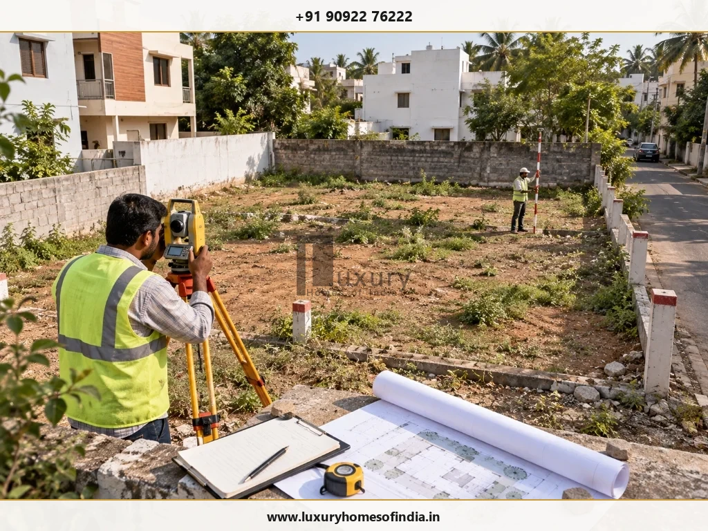
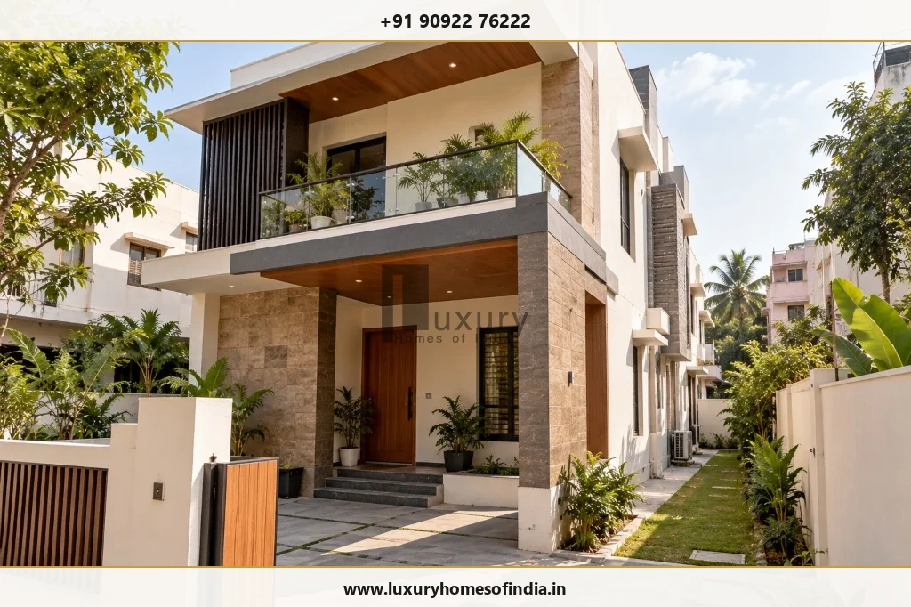
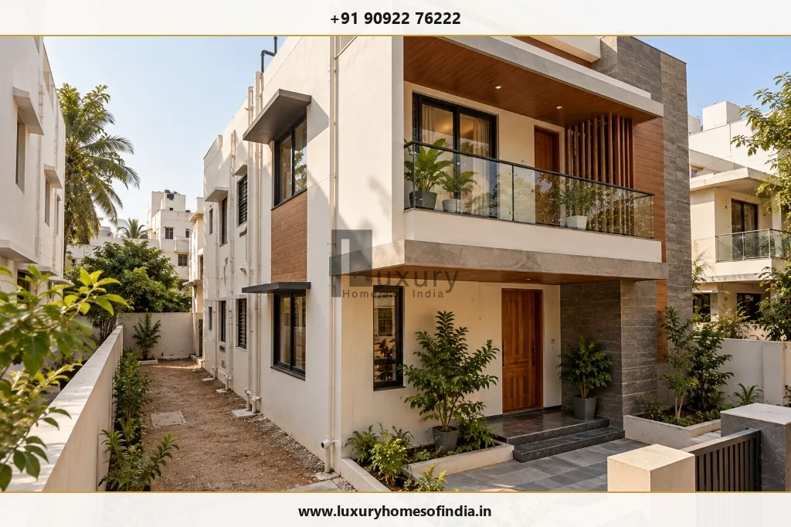

Before constructing an individual house in Tamil Nadu, homeowners should confirm the plot's legal and planning status, identify the competent approval authority and establish which permissions are required for the proposed building. The DTCP approval process for an individual house can involve land-record verification, building-plan preparation, document submission, technical scrutiny and the issue of the applicable permission. The exact route depends on the property's location, land-use classification, layout status, building specifications and current regulations.
Certain qualifying residential proposals may be eligible for a self-certification process, but eligibility must be checked against the applicable scheme conditions. This guide explains how to prepare for the approval process, which documents may be needed, what can cause delays and which design decisions should be reviewed before construction begins. Homeowners should verify the current requirements with the competent authority before submitting an application or commencing work.
Key Takeaways: DTCP Individual House Approvals at a Glance
- Layout vs Building Approval: Buying a DTCP-approved plot establishes approved land subdivision, but it does NOT grant automatic permission to build. A separate building plan permit must be obtained for the proposed house.
- Competent Authority Routing: Under delegated powers, individual residential houses within DTCP areas are typically scrutinized and sanctioned by the local body (Panchayat / Municipality / Corporation) or Local Planning Authority (LPA).
- Single Window Portal Submission: All planning permissions and building license applications across Tamil Nadu are filed through onlineppa.tn.gov.in.
- Self-Certification Availability: Small standalone residential houses on plots up to 2,500 sq ft and built-up area up to 3,500 sq ft may qualify for instant self-certification under G.O. Ms. No. 118, subject to strict road-width and zoning eligibility.
- Zero Pre-Approval Civil Work: Physical construction cannot commence merely upon application submission or fee payment; building permits must be formally issued and active.
1. What Is DTCP Approval for an Individual House?
The Directorate of Town and Country Planning (DTCP) performs statutory planning functions in applicable areas of Tamil Nadu under the Tamil Nadu Town and Country Planning Act, 1971, and governing development rules. Depending on the property's location and the powers delegated to local or planning authorities, an individual house may require planning permission, a building permit or another formally applicable approval route.
It is important to distinguish between three separate, frequently conflated regulatory matters:
- Layout approval: Relates to the macro planning and legal subdivision of larger land parcels into residential plots, establishing public roads, open space reservations (OSR), and utility corridors.
- Individual building approval: Relates to the specific proposed house, including its architectural footprint on the plot, boundary setbacks, overall height, floor area ratio, and compliance with the Tamil Nadu Combined Development and Building Rules, 2019 (TNCDBR-2019).
- Building permit / license: The administrative authorisation issued by the competent local authority (such as the Village Panchayat or Municipality) permitting civil construction on site.
2. Who Needs Approval to Build an Individual House?
The required process depends on the property, proposed development and competent authority. Homeowners should establish the applicable route before finalising their architectural drawings.
Approval is legally required when planning to:
- Construct a new independent house or bungalow.
- Build a duplex or ground-plus-one residence.
- Develop a custom villa on a residential plot.
- Reconstruct an existing building after demolition.
- Extend, expand or alter an existing house where structural additions alter covered floor area.
- Build on any plot located within a planned, municipal, or regulated development area.
Not every application is processed directly by the DTCP Directorate headquarters. Depending on the jurisdiction, the relevant Local Planning Authority (LPA) or the local body (Executive Officer of Town Panchayat or Commissioner of Municipality) handles some or all of the approval stages under delegated powers.
What to establish first: Identify the specific local authority responsible for the property, the application category applicable to the proposal, and whether any additional statutory clearances (such as PWD waterbody clearance or agricultural conversion) are necessary.
3. Step 1: Verify the Plot Before Designing the House
Plot verification should happen before the architectural design is finalised. A site may appear physically suitable for an expansive residence, but its legal records, revenue boundaries, land-use classification, or statutory reservations dictate what can actually be built.

During preliminary site due diligence, complete these four core checks:
Check A Check Ownership and Land Records
Review the registered title deeds, patta in the applicant's name, survey number, subdivision details, and the Field Measurement Book (FMB) sketch. Check whether the documented dimensions agree with physical site measurements. Differences in boundaries or survey numbers should be resolved before drawings are submitted.
Check B Confirm Permitted Land Use
Verify whether the proposed residential use is permissible under the applicable DTCP Master Plan, Detailed Development Plan (DDP), or regional land-use zoning. A land record or patta alone does not prove that residential construction is permitted; unapproved agricultural conversions require prior concurrence.
Check C Establish the Layout's Approval Status
Where the plot forms part of a residential layout, verify its original DTCP layout approval number, planning permit, or regularisation order under the Tamil Nadu Regularisation of Unapproved Layouts Framework. Identify any special conditions, road-widening reservations, or OSR commitments.
Check D Review Access and Site Constraints
Check public road access, maintenance status, and compliance with minimum road-width norms under TNCDBR-2019. Check potential constraints relating to nearby waterbodies, drainage channels, state/national highway buffer zones, or high-tension power lines.
The outcome of this stage should be a clear understanding of the plot's documented boundaries, planning status, competent authority and known design constraints.
4. Step 2: Prepare a Building Plan That Fits the Site
After preliminary checks are completed, an appropriately registered professional (Council of Architecture registered Architect or Licensed Surveyor registered with the Single Window Portal) prepares the building plan and technical documentation.
The technical submission typically requires:
- Location and Key Plan: Depicting the plot in relation to surrounding public roads, prominent landmarks, and revenue survey numbers.
- Site Plan: Showing exact plot boundaries, overall dimensions, surrounding survey parcels, access road width, and north orientation.
- Floor Plans: Detailed floor layouts for each proposed level showing room dimensions, openings, wall thicknesses, and functional room nomenclature.
- Elevations and Cross-Sections: Minimum two cross-sections through staircases and toilets, together with front and side elevations illustrating ground levels, sill levels, lintel levels, and overall building height.
- Area Calculations & Setback Schedules: Detailed calculations of plot coverage, FSI floor area, parking provisions, and mandatory front, rear, and side setback dimensions.
- Rainwater Harvesting & Septic Tank Layouts: Engineered details of RWH collection sumps, percolation pits, and waste treatment systems in compliance with statutory environmental mandates.
- Prescribed Technical Declarations: Structural stability undertakings and digital signatures of the applicant and registered professional.
5. Step 3: Check Eligibility for Residential Self-Certification
Tamil Nadu has introduced a self-certification framework for certain qualifying residential buildings. It provides an expedited route for eligible proposals, subject to the scheme's operative rules and conditions.
A government order published in July 2024 (G.O. Ms. No. 118) describes an eligibility framework involving:
- Plot Area: Up to 2,500 sq. ft. (approx. 232 sq. metres).
- Built-up Area: Up to 3,500 sq. ft. (approx. 325 sq. metres) across all habitable floors.
- Dwelling Units: Maximum of two dwelling units.
- Floor Configuration & Height: Ground-floor or ground-plus-one-floor (G+1), or stilt plus two floors, subject to applicable height limits (7 metres to 10 metres under amended notifications).

The order also sets out strict restrictions concerning plot status and excluded areas. Before using this route, confirm:
- Whether the plot satisfies applicable ownership and approved layout/regularisation conditions.
- Whether the proposed building meets all current area, height, floor and dwelling-unit requirements.
- Whether the property falls within an excluded or restricted area (such as CRZ zones, waterbody catchment buffers, or hill area planning boundaries).
- Whether the proposed use and site conditions are eligible.
- Which application module, drawing formats, and declarations the current portal requires.
6. Step 4: Prepare the Required Documents
The documents required for an individual-house application depend on the approval route, local authority, property circumstances and current portal checklist. Use the following table as a comprehensive preparation guide:
| Document or Information | Why It May Be Needed |
|---|---|
| Sale deed or relevant ownership record | To establish the applicant's lawful title and interest in the property through registered conveyancing documents. |
| Patta or applicable land record | To support verification of the recorded revenue land details and owner particulars in official revenue ledgers. |
| Survey number, subdivision details and FMB sketch | To establish the documented plot dimensions, boundaries, adjoining survey parcels, and public access frontage. |
| Approved layout or regularisation documents | To support verification of the plot's planning status and confirm that the plot forms part of an approved or regularised layout. |
| Site plan and building drawings | To show the proposed development, floor areas, elevations, sections, setbacks, parking, and rainwater harvesting details. |
| Applicant and property details | To complete mandatory identification, identity proof, address, and ownership affidavits required on the portal. |
| Professional registration or authorisation details | To identify the registered architect or licensed surveyor responsible for drawing preparation and statutory compliance. |
| Previous approval documents (where relevant) | To support a revised application, alteration, reconstruction, or demolition-reconstruction proposal. |
| Prescribed declarations, certificates and NOCs | To address site-specific conditions, structural stability certificates, and any external department clearances where required. |
Before submitting, compare the prepared dossier against the latest checklist for your exact application category on the Single Window Portal to resolve discrepancies before uploading.
7. Step 5: Submit the Application Through the Official Portal
All planning permissions and building license applications in Tamil Nadu are processed digitally through the Tamil Nadu Single Window Portal for Planning Permission:
https://onlineppa.tn.gov.in/
The general preparation and submission sequence involves seven structured steps:
- Register or sign in to the applicable portal using applicant or registered professional login credentials.
- Identify the correct application category (Regular Scrutiny vs Self-Certification) and competent authority (DTCP / LPA / Municipality / Panchayat).
- Enter property and building particulars, including revenue village, taluk, survey number, proposed plinth area, floor area, and building height.
- Upload the prescribed CAD drawings and documents in specified PDF/DWG formats following portal layer-naming conventions.
- Complete required declarations, owner affidavits, and professional technical undertakings.
- Follow portal instructions for assessed fees and complete payment through the integrated payment gateway.
- Retain the application reference number, submitted drawings set, acknowledgment slip, and fee payment receipts.
8. Step 6: Respond to Scrutiny and Clarification Requests
Once submitted, the application is processed under the applicable rules and administrative procedure. The scrutiny officer reviews land-use zoning, layout legitimacy, plot dimensions, access road width, building height, setbacks, parking, and technical documents.
If the scrutiny officer flags an issue or requests revised drawings, respond through the prescribed online portal channel. To manage this stage effectively:
- Retain the exact submitted drawing set and application reference number for audit tracking.
- Monitor official portal status updates regularly for inspection notices or query letters.
- Check each query against submitted documents to identify the precise technical concern raised.
- Coordinate drawing revisions directly through the registered professional responsible for the submission.
- Maintain thorough records of revised submissions and official communications.
A well-organised initial submission dramatically reduces avoidable back-and-forth, even though no administrative process can guarantee unconditional approval.
9. Step 7: Understand the Fees and Confirm Permission
The amount payable depends on the competent authority, application route, building characteristics, and current fee schedule. For a detailed breakdown of charges, refer to our comprehensive guide on Building Plan Approval Fees in Chennai and Tamil Nadu.
Potential statutory charges typically include:
- Scrutiny fees assessed per square metre of proposed built-up area.
- Development charges for land and building under the Town and Country Planning Act.
- Building license fees and municipal processing charges.
- Construction Workers Welfare Fund contribution (typically 1% of assessed construction value).
- Vacant land tax, infrastructure amenities charges, or road-cut restoration charges where applicable.
Before commencing construction on site, confirm that:
- The required permission has been validly issued, or all requirements of a formally applicable alternative process have been satisfied.
- The approved drawings and relevant conditions are in hand, bearing official municipal seals or digital QR codes.
- The permitted floor area, setbacks, and building configuration are fully understood by the construction team.
- The site contractor has the exact sanctioned drawing set.
- Construction will strictly follow the approved design and statutory rules.
10. How Long Does the Approval Process Take?
The processing duration depends on the application route, completeness of documentation, architectural complexity, local body workload, and whether clarifications are required. For a comprehensive analysis of turnaround periods, read our detailed guide on How Long Building Plan Approval Takes in Chennai and Tamil Nadu.
While self-certification can issue instantaneous permits upon fee payment for qualifying small homes, regular scrutiny typically takes 3 to 6 weeks for compliant applications. There is no single timeline that should be unconditionally promised for every individual house. Build the approval stage into the overall project programme rather than assuming a fixed deadline.
11. Common Reasons for Delays
Understanding the most frequent causes of delay helps homeowners address potential defects before submission:
- Unclear Plot or Layout Status: Unresolved questions regarding original layout approval, regularisation orders, or unapproved sub-divisions requiring additional verification.
- Inconsistent Survey Information: Discrepancies between ownership deeds, revenue patta entries, FMB sketches, and physical site measurements.
- Non-Compliant Building Plans: Architectural layouts that breach mandatory setbacks, exceed permissible floor space index (FSI), or violate building height limits.
- Incomplete Documentation: Missing title parent deeds, unlinked legal heir records, or missing professional technical undertakings.
- Incorrect Application Category: Applications filed under the wrong authority (e.g., applying to DTCP when the local body holds delegated powers) or improper building category.
- Site-Specific Restrictions: Proximity to waterbodies, planned road-widening corridors, or agricultural zone restrictions that require external department NOCs.
12. What Should You Check Before Planning a Luxury House?
For a luxury villa or bespoke residence, regulatory feasibility should inform the architectural brief from day one. Rather than treating planning approval as an administrative afterthought, high-end residential design requires early technical alignment between client aspirations and site constraints.

Review the following critical parameters before freezing your custom villa design:
- Plot Feasibility: Confirm documented boundaries, road widths, and permitted land use before committing to architectural master planning.
- Building Envelope: Establish statutory setbacks, permissible building height, and maximum floor area to define the realistic three-dimensional building envelope.
- Spatial Planning: Test the architectural brief—double-height living rooms, courtyard configurations, and guest suites—against site constraints before freezing room dimensions.
- Outdoor Features: Verify planning requirements affecting swimming pools, landscaped verandahs, open-to-sky courtyards, terraces, and covered parking pavilions.
- Services Coordination: Coordinate structural engineering grids, MEP services, sewage treatment, and rainwater harvesting infrastructure with statutory building permit requirements.
- Budget Planning: Separate statutory municipal charges and infrastructure amenities funds from professional fees and core construction budgets.
- Construction Readiness: Ensure all sanctioned drawings, structural drawings, and permit conditions are synchronized with the general contractor before site mobilization.
A well-designed home responds to both the homeowner's architectural brief and the property's regulatory constraints. Resolving these questions early eliminates redesign cycles, protects construction budgets, and ensures an organized transition to site execution.
Frequently Asked Questions
Conclusion: Plan the Approval Before the Construction
The DTCP approval process for an individual house in Tamil Nadu starts with establishing the property's planning status and identifying the competent authority. Homeowners should then prepare the building plan, confirm the correct application route, submit the required documents and obtain the applicable permission before construction.
For a luxury home, this feasibility stage is especially important because plot restrictions can influence the architectural design, usable floor area, outdoor spaces and project budget. Luxury Homes of India encourages homeowners to treat site feasibility, regulatory coordination and architectural planning as connected decisions rather than separate stages.
Planning an Individual House or Luxury Villa in Tamil Nadu?
Discuss your plot constraints, architectural vision, and statutory approval roadmap with Luxury Homes of India before committing to a final floor plan. Our turnkey team coordinates site due diligence, bespoke architectural design, municipal approvals, and premium construction under a unified project umbrella.
Schedule a Consultation → Explore Construction CostsWritten by: Luxury Homes of India Editorial
Reviewed by: Technical Compliance & Planning Review Team | Luxury Homes of India